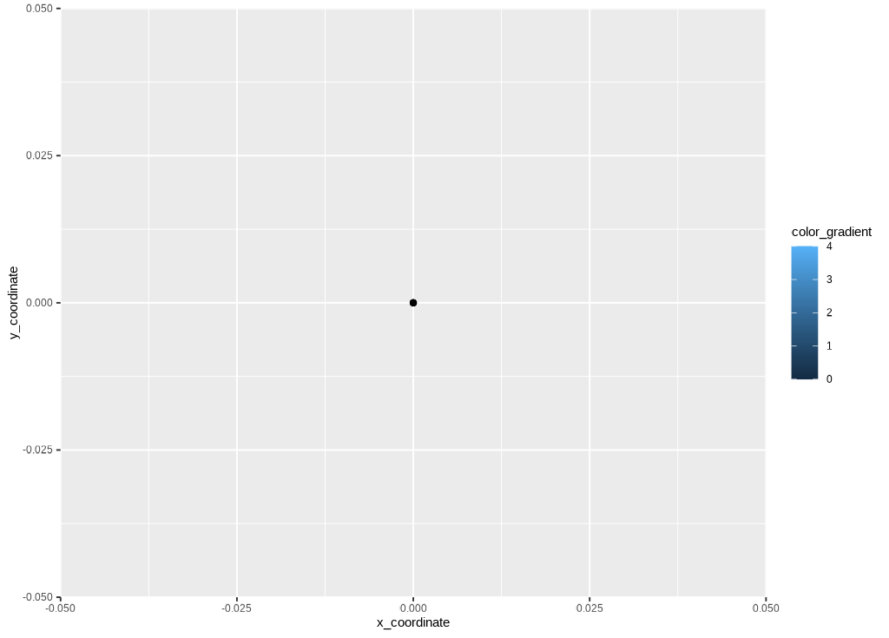
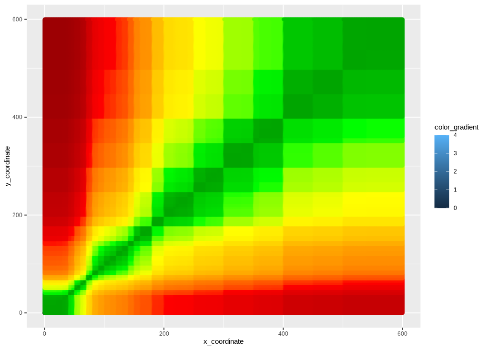
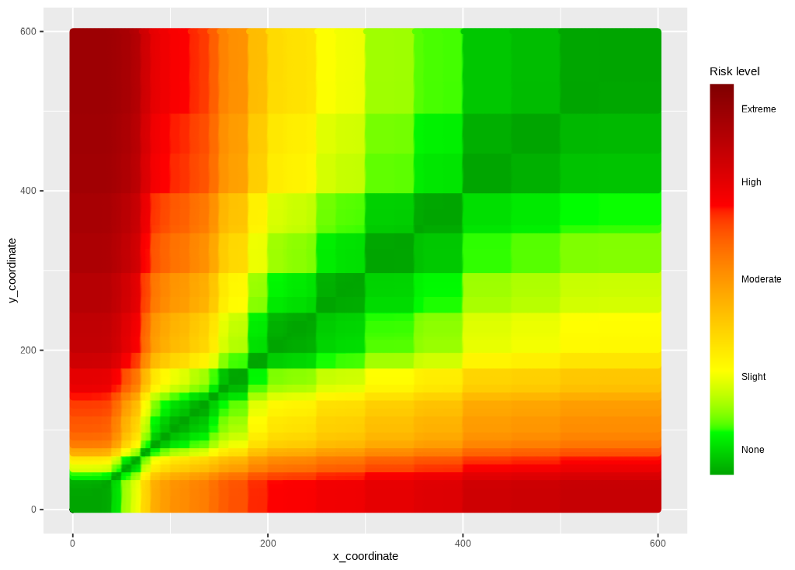
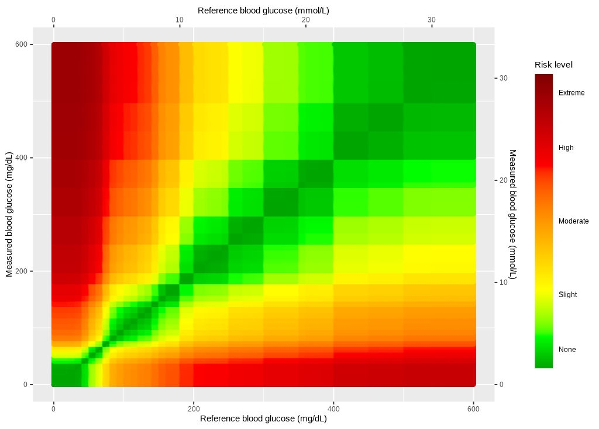
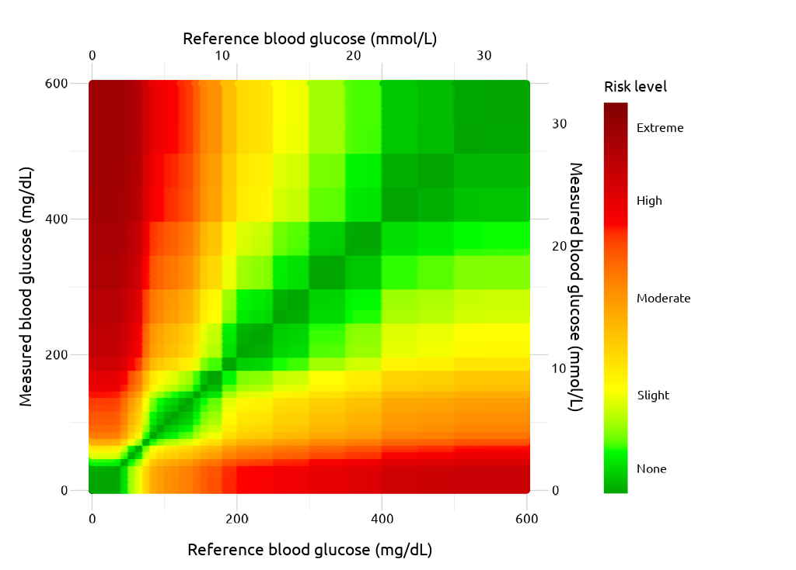

Heatmap
heatmap.RmdMotivating problem/issue
In earlier versions of the application, the heat-map background
wasn’t smoothed like the original Excel application. This file documents
how I changed the SEG graph using a pre-made .png
image.
Data
To create the SEG using ggplot, I need to
load a few data inputs from Github.. I can
do this with the segtools::get_seg_data() function in the
code chunk below:
-
risk_pairs-> this assigns a risk factor value to each BGM measurement -
samp_measured_data-> this is a small sample measurement dataset -
vand_data-> this is a dataset from Vanderbilt used to create some of the initial calculations
segtools::get_seg_data("names")
#> [1] "VanderbiltComplete" "AppRiskPairData" "RiskPairData"
#> [4] "AppLookUpRiskCat" "LookUpRiskCat" "AppTestData"
#> [7] "AppTestDataSmall" "AppTestDataMed" "AppTestDataBig"
#> [10] "FullSampleData" "ModBAData" "No_Interference_Dogs"
#> [13] "SEGRiskTable" "SampMeasData" "SampleData"
#> [16] "lkpRiskGrade" "lkpSEGRiskCat4"
risk_pairs <- segtools::get_seg_data("AppRiskPairData")
samp_measured_data <- segtools::get_seg_data("FullSampleData")
vand_data <- segtools::get_seg_data("VanderbiltComplete")
mmolConvFactor <- segtools::mmolConvFactor
mmolConvFactor
#> [1] 18.01806
risk_factor_colors <- segtools::risk_factor_colors
base_data <- segtools::base_data
base_data
#> x_coordinate y_coordinate color_gradient
#> 1 0 0 0
#> 2 0 0 1
#> 3 0 0 2
#> 4 0 0 3
#> 5 0 0 4risk_pairs has columns and risk pairs for both
REF and BGM, and the RiskFactor
variable for each pair of REF and BGM data.
Below you can see a sample of the REF, BGM,
RiskFactor, and abs_risk variables.
risk_pairs |>
dplyr::sample_n(size = 10) |>
dplyr::select(
REF, BGM, RiskFactor, abs_risk)
#> # A tibble: 10 × 4
#> REF BGM RiskFactor abs_risk
#> <dbl> <dbl> <dbl> <dbl>
#> 1 396 490 -0.366 0.366
#> 2 79 558 -3.18 3.18
#> 3 594 42 3.12 3.12
#> 4 527 215 1.11 1.11
#> 5 333 570 -0.697 0.697
#> 6 177 539 -2.04 2.04
#> 7 315 378 -0.211 0.211
#> 8 591 434 0.155 0.155
#> 9 203 144 0.919 0.919
#> 10 474 335 0.514 0.514samp_measured_data mimics a blood glucose monitor, with
only BGM and REF values.
samp_measured_data |>
dplyr::sample_n(size = 10) |>
dplyr::select(
REF, BGM)
#> # A tibble: 10 × 2
#> REF BGM
#> <dbl> <dbl>
#> 1 121 123
#> 2 115 120
#> 3 111 116
#> 4 132 143
#> 5 194 202
#> 6 179 174
#> 7 150 161
#> 8 109 100
#> 9 174 183
#> 10 106 111vand_data contains blood glucose monitor measurements,
with only BGM and REF values.
The original (Excel) SEG image
Below is the image from the Excel file:

The points are plotted against a Gaussian smoothed background image.
ggplot2 image using risk pairs
The steps/code to create the current ggplot2 image are
below
Base layer
ggp_base <- ggplot() +
geom_point(data = base_data,
aes(x = x_coordinate,
y = y_coordinate,
fill = color_gradient))
ggp_base
Risk color gradient
The risk layer adds the risk_pairs data and creates the
color gradient.
ggp_risk_color_gradient <- ggp_base +
geom_point(data = risk_pairs,
aes(x = REF,
y = BGM,
color = abs_risk), show.legend = FALSE) +
ggplot2::scale_color_gradientn(
colors = risk_factor_colors,
guide = "none",
limits = c(0, 4),
values = scales::rescale(c(
0, # darkgreen
0.4375, # green
1.0625, # yellow
2.7500, # red
4.0000)))
ggp_risk_color_gradient
Risk fill gradient
The guide is added with ggplot2::scale_fill_gradientn()
and ggplot2::guide_colorbar().
ggp2_risk_fill_gradient <- ggp_risk_color_gradient +
ggplot2::scale_fill_gradientn(values = scales::rescale(c(
0, # darkgreen
0.4375, # green
1.0625, # yellow
2.75, # red
4.0 # brown
)),
limits = c(0, 4),
colors = risk_factor_colors,
guide = ggplot2::guide_colorbar(ticks = FALSE,
barheight = unit(100, "mm")),
breaks = c(0.25, 1, 2, 3, 3.75),
labels = c("None", "Slight",
"Moderate", "High", "Extreme"),
name = "Risk level")
ggp2_risk_fill_gradient
Scales
The x and y scales are set manually using
ggplot2::scale_y_continuous() and
ggplot2::scale_x_continuous().
ggp_scales <- ggp2_risk_fill_gradient +
ggplot2::scale_y_continuous(
limits = c(0, 600),
sec.axis =
sec_axis(~. / mmolConvFactor,
name = "Measured blood glucose (mmol/L)"
),
name = "Measured blood glucose (mg/dL)"
) +
ggplot2::scale_x_continuous(
limits = c(0, 600),
sec.axis =
sec_axis(~. / mmolConvFactor,
name = "Reference blood glucose (mmol/L)"
),
name = "Reference blood glucose (mg/dL)"
)
ggp_scales
Theme
Finally, the theme is added to polish the output.
ggp_seg <- ggp_scales +
segtools::theme_seg(base_size = 20)
ggp_seg